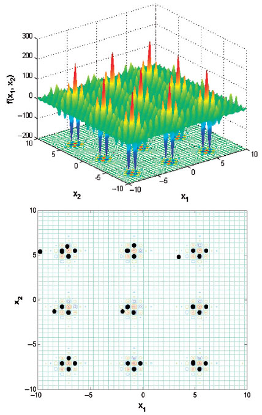
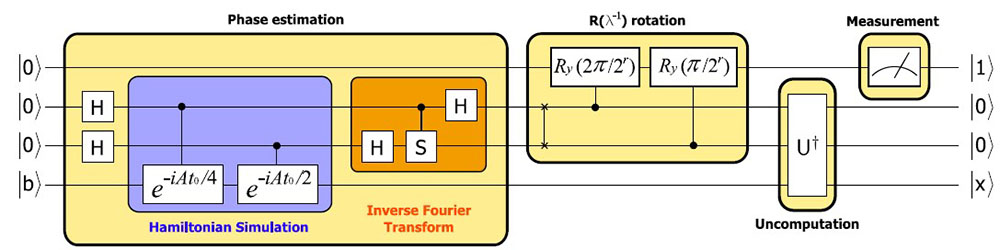
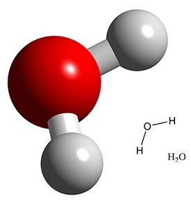
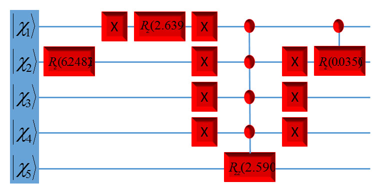

Sabre Kais Group
Quantum Information and Quantum Computation
Quantum Computing and Algorithms
The main thrust of this research is developing new quantum algorithms for solving hard problems in Chemistry that cannot be solved efficiently on a classical computer. The first problem is finding an exact solution, ground and excited states, to the Schrodinger equation for large systems. On classical computer, resource requirements for complete simulation of the time-independent Schrodinger equation scale exponentially with the number of atoms in a molecule, or system size, limiting the exact solution to diatomic and triatomic molecules. Developing fast polynomially quantum algorithms is desirable for exact solution for large systems. The second problem, which is very important in all fields of science, is finding the global minimum for a multi-variable multiple-minima problem. The main obstacle in this field is that the number of local minima grows exponentially with the size of the system.
In the field of quantum computation and quantum information the development of new fast polynomial quantum algorithms for simulating many-body systems will find wide applications in chemistry and physics. In addition, developing fast quantum algorithms for global optimization will find wide applications in all fields of science and engineering. Rational drug design, molecular modeling, quantum mechanical calculations and mathematical biological calculations are but a few examples of fields that rely heavily upon the location of a global minimum in a multiple-minima problem.
Global Optimization

The surface potential of Shubert function and quantum search result. The top one is the surface potential with the range x1,2 ε(−10, 10). The contour of top panel with the quantum search results. The black dots present the measurement results during the quantum search algorithm. With 9 qubits used, 118 measurements and total 560 rotations, we obtained the exact global minimum -186.73
J. Zhu, Z. Huang and S. Kais, Mol. Phys. 107, 2015 (2009)
Solving linear system of equation

Experimental realization of quantum algorithm for solving linear systems of equations, J. Pan, Y. Cao, X. Yao, Z. Li, C. Ju, X. Peng, S. Kais, and J. Du. Phys. Rev. A 89, 022313 (2014)
Quantum circuit design for the water molecule
Daskin and S. Kais, J. Chem. Phys. 134, 144112 (2011)

